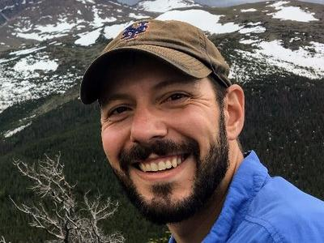
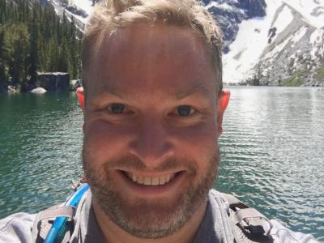
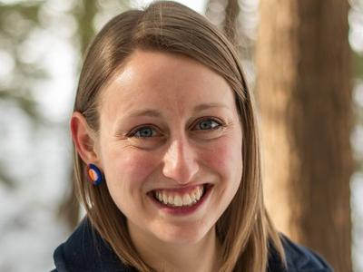

Our team
Our team of research data scientists, postdoctoral and graduate fellows, academic interns, and research associates
Team

Rebecca Dikow is a Research Data Scientist and leads the Smithsonian Institution Data Science Lab. She has a B.S. in Biology from Cornell University and a Ph.D. in Evolutionary Biology from the University of Chicago. Her dissertation research focused on using whole-genome data to build evolutionary trees (phylogenies). After the completion of her Ph.D., she was the Biodiversity Genomics postdoctoral fellow at the Smithsonian. She is working with Smithsonian scientists to conduct biodiversity research, including genomics, informatics, and machine learning. She is also an affiliated faculty member in the George Mason University School of Systems Biology.

Mike is a Data Scientist and is a member of the Smithsonian Data Science Lab since 2018. Mike has a B.S. in Biological Sciences from Virginia Tech, and a Masters in Bioinformatics from Virginia Commonwealth University. Mike has been working with the Smithsonian since 2007, when he interned with the Smithsonian DNA Barcode Network, and then worked with them full-time until 2018 as their Informatics Lead. As part of the Data Science Lab, Mike will be working with Smithsonian partners on machine learning and visualization projects. He also leads the Smithsonian’s partnership with the Carpentries (formerly Software Carpentry and Data Carpentry), whose goal is to teach foundational computational and data science skills to researchers.

Alex White’s areas of scholarly expertise include statistical modeling in biogeography, quantitative ecology, ornithology, and community phylogenetics. Dr. White’s research focuses on how ecological and evolutionary forces (e.g., dispersal, range expansion, competition, and speciation) interact to mediate broad scale patterns of biodiversity and how those interactions are influenced by local ecological dynamics. Most of this research focuses on birds, though he compares avian patterns with those of other taxonomic groups including plants, mammals, and invertebrates. This work combines traditional methods in ecology and evolution with modern advances in statistics and computation, particularly those in machine learning and data science. As a Biodiversity Research Data Scientist in the Smithsonian Data Science Lab, he leads projects that leverage digitized museum collections as well as applications of computer hardware technology and edge uses of machine learning in field studies of animal and plant ecology.
Postdoctoral Fellows
Dr. Richie Hodel

Richie Hodel is a Biodiversity Genomics Postdoctoral Fellow in the Smithsonian Data Science Lab and the Department of Botany at the National Museum of Natural History. He has a B.A. in Music Theory from Amherst College, a M.S. in Biology from Appalachian State University, and a Ph.D. in Botany from the University of Florida. His work in the Data Science Lab is focused on developing methods that use machine learning to generate high throughput phenotypic data from digitized herbarium specimen images, with species in the cherry genus (Prunus) used as test cases. Ultimately, the goal is to combine multidimensional phenotypic trait data with genomic and environmental data from the same specimens to improve our understanding of the genome-phenome-environment connection and how it shapes biodiversity.
Dr. William Mattingly
William Mattingly is a Postdoctoral Fellow at the Smithsonian Institution Data Science Lab in collaboration with the United States Holocaust Memorial Museum (USHMM). He has a B.A. and M.A. in History from Florida Gulf Coast University and a Ph.D. in History from the University of Kentucky. His dissertation research explored using historical social network analysis, cluster analysis, and computational methods for identifying ninth-century intellectual and pedagogical networks. Most recently, his research has focused on developing text classification neural network models to identify sources in medieval texts and developing natural language processing (NLP) methods for medieval Latin. At the Smithsonian and USHMM, he is developing machine learning methods to aid, in among other things, the cataloging of Holocaust documents. He is co-investigator and developer for the Structured Data Extraction and Enhancement in South Africa’s Truth and Reconciliation Archive project and lead investigator and developer for the Digital Alcuin Project.
Follow William on Twitter @wjb_mattingly
Dr. Jennifer Spillane

Jennifer Spillane (she/her) is a Postdoctoral Fellow in the Smithsonian Institution Data Science Lab. She earned a B.A. in Biology from Trinity Christian College and an M.Sc. in Biology from Western Washington University. Spillane recently finished her Ph.D. in Molecular and Evolutionary Systems Biology at the University of New Hampshire where she used phylogenomics and comparative genomics to learn more about trait evolution in animals, and particularly marine invertebrates. As part of the Data Science Lab, she will work on developing machine learning models to address the problem of DNA sequence contamination. She is generally interested in improving genomic and bioinformatic methods to better study non-model and under-represented organisms.
Research Associates
Dr. Paul Frandsen
Paul Frandsen is an Assistant Professor of Plant and Wildlife Sciences at Brigham Young University. He helped co-found the Data Science Lab and remains a close collaborator. Paul earned his PhD from Rutgers University in the Department of Entomology where he worked on the phylogenetics of caddisflies and on developing algorithms for the automatic selection of models of molecular evolution.
Dr. Mirian Tsuchiya
Mirian Tsuchiya was the Smithsonian Women’s Committee Data Science Postdoctoral Fellow. She has a B.S. in Biology from the Universidade Estadual de Londrina, an M.Sc. in Zoology from the Pontificia Universidade Católica do Rio Grande do Sul and a Ph.D. in Environmental Science and Policy from the George Mason University. Her dissertation research focused on using whole genome sequencing, targeted enrichment of ultraconserved elements (UCEs) and mitogenomes under a phylogenomics framework to assess questions regarding the biogeography, taxonomy, and evolutionary history of Neotropical mammals. Mirian worked on a variety of biodiversity genomics projects with the Data Science Lab and now an ORISE fellow at the Food and Drug Administration Center for Applied Food Safety.